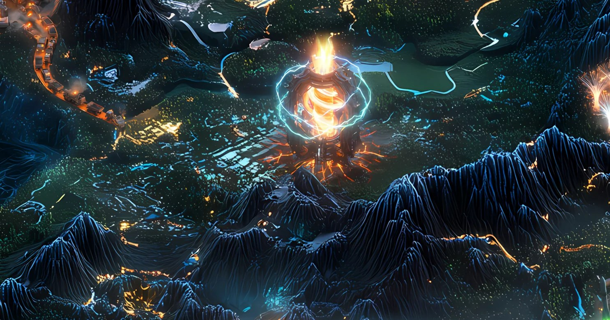

Record // INFRASTRUCTURE PLAYABLE TEARDOWN
FIREDANCER REACTOR

If every Solana validator speaks one dialect, a single bug can topple the network. Firedancer is a second dialect.
What happened
Firedancer is an independent Solana validator client built from scratch by Jump Crypto, written primarily in C with a modular, tile-based architecture drawn from low-latency trading systems. Because it is a clean-room reimplementation rather than a fork of the existing Agave client, it introduces genuine client diversity. In December 2025 the full Firedancer client finalized blocks on Solana mainnet for the first time — the first non-Agave-descended codebase to do so — after running in production on a small set of validators for roughly 100 days. Jump deliberately kept the rollout slow, advising validators against switching at scale before security audits were complete.
Why Solana remembers it
Client diversity means a critical bug in one implementation need not halt the whole network, directly addressing Solana's historical outage risk from running a single validator codebase.
On the map
A second great furnace lit beside the first, so one going dark never leaves the realm cold.